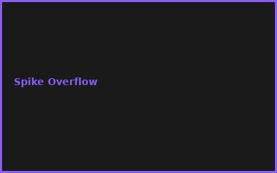
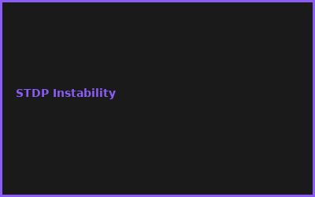
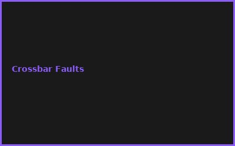
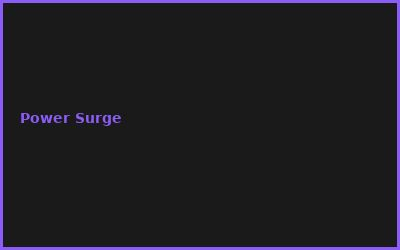

Kapitel 1: Spiking Neural Networks (SNNs)
- Neuron Models (Leaky Integrate & Fire)
- Spike Timing Dependent Plasticity (STDP)
- Threshold Dynamics
- Energy Efficiency Advantages
Kapitel 2: Neuromorphic Chip Architectures
// Intel Loihi-2 Architecture
// Parallel cores, programmable neurons, learning rules
cores = 1024 # async processors
neurons_per_core = 1024
synapses = 1M+ per core
Kapitel 3: Event-Driven Processing
- Asynchronous Update Mechanisms
- Spike Routing & Arbitration
- Crossbar Switch Architectures
- Latency & Throughput Optimization
Kapitel 4: Low-Power Design
- Analog/Mixed-Signal Circuits
- Memristor Crossbars
- Power Gating Techniques
- Thermal Management
Kapitel 5: Learning Algorithms
- Unsupervised Learning (Hebbian)
- Supervised Backprop through Time (BPTT)
- Reinforcement Learning Integration
- Online Adaptation
Kapitel 6: Applications & Robotics
- Real-time Sensorimotor Control
- Pattern Recognition (Vision)
- Autonomous Navigation
- Embodied AI Systems
💡 PRO-TIPPS
🎯 Tipp: NEST Simulator statt Hardware
Problem: Intel Loihi = Zugang schwer | Lösung: NEST Simulator = kostenlos
💰 BUDGET-HACKS (90% KOSTENLOS!)
💰 Hack: NEST + Python Simulation
Original: Neuromorphic Hardware Access: €10K+ | Hack: NEST Simulator: €0 | Einsparnis: 100%
⚠️ FEHLER
❌ Fehler: Zu hohe Spike Rates
Was passiert: Chip überlastet | ✅ Lösung: STDP Learning Rate anpassen
🌐 COMMUNITY
NEST Simulator, Brian2, Intel Loihi Community, Neuromorphic Computing Summit
📸 Fehler-Galerie



